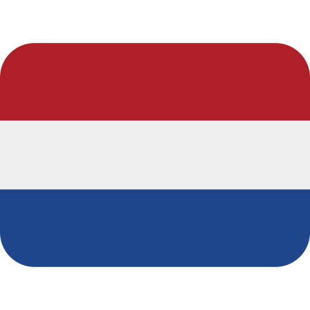

<!DOCTYPE html>
<html lang="en">
  <head>
    <meta charset="UTF-8" />
    <meta name="viewport" content="width=device-width, initial-scale=1.0" />
    <title>❓ James Pink-Gyett</title>
    <link rel="stylesheet" href="../scripts/css/about.css" />
    <link rel="icon" href="../assets/icons/flag-gb.png" />
    <link rel="alternate" href="https://jamespg.uk/about" hreflang="en" />
    <link rel="alternate" href="https://jamespg.uk/about-nl" hreflang="nl" />
  </head>
</html>
<body>
  <nav>
    <div>
      <input type="checkbox" id="nav-toggle" class="hidden" />
      <label for="nav-toggle" class="hamburger">
        <span></span>
        <span></span>
        <span></span>
      </label>
      <ul>
        <li><a href="..">Home</a></li>
        <li><a href="../about">About</a></li>
        <li><a href="../experience">Experience</a></li>
        <li><a href="../projects">Projects</a></li>
        <li>
          <a href="../about-nl" draggable="false"
            ></a>
        </li>
      </ul>
    </div>
  </nav>
  <section class="about">
    <div class="about-ctr">
      <h1>About <span class="glitch" data-text="Me">Me</span></h1>
      <p>
        Hi, I'm James - a hardworking and curious individual with a strong interest in technology
        and healthcare. I take pride in learning new skills, adapting to new situations, and finding
        creative ways to solve problems. Outside of work, I enjoy photography, travel, exploration,
        learning, and programming.
      </p>
      <div class="interests-ctr">
        <h1>Interests</h1>
        <ul>
          <li>
            
          </li>
          <li>
            
          </li>
          <li>
            
          </li>
          <li>
            
          </li>
          <li>
            
          </li>
        </ul>
      </div>
    </div>
  </section>
  <footer>
    <div class="footer-ctr">
      <p>© James Pink-Gyett</p>
      <div class="socials-ctr">
        <a href="https://www.linkedin.com/in/jamesssss/" draggable="false"
          ></a>
        <a href="https://github.com/jam-esss" draggable="false"
          ></a>
      </div>
    </div>
  </footer>
</body>
